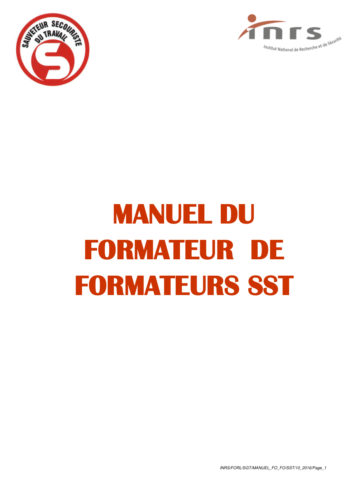
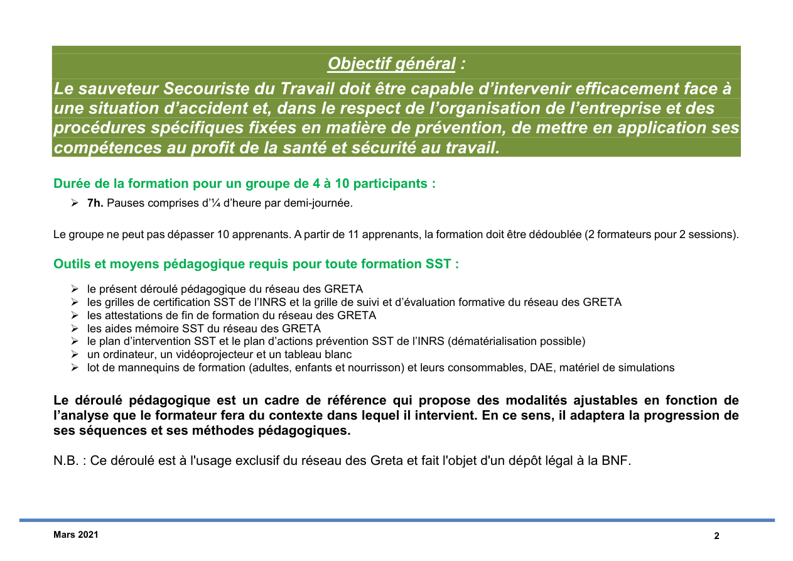

PI intégré en lecture directe
Le vrai support PI est intégré tel quel dans une page dédiée, sans réécriture simplifiée.
Compétence C5
Lecture arborescente du PI : protéger, examiner, faire alerter, secourir, puis basculer vers la conduite à tenir adaptée à la situation et au public.

Le vrai support PI est intégré tel quel dans une page dédiée, sans réécriture simplifiée.

Le module embarque le support local existant assets/html/pi/PI_SST.html et le relie aux branches C5.
Le PI reste lisible si l'on suit toujours la même logique de décision.
Supprimer ou isoler le danger, sécuriser la zone, éviter le sur-accident.
Voir C2Conscience, respiration, saignement, gêne respiratoire, plainte ou douleur.
Voir C315, 18, 112 ou 114 avec message court, localisable et exploitable.
Voir C4Choisir la branche adaptée et la conduite à tenir sans perdre le fil décisionnel.
Chaque branche renvoie à la fiche geste détaillée correspondante, au PI complet et aux variantes adulte / enfant / nourrisson.
Objectif : arrêter la perte sanguine.
Objectif : désobstruer avant l'inconscience.
Objectif : éviter l'aggravation et guider l'alerte médicale.
Objectif : stopper l'effet thermique ou chimique et limiter l'aggravation.
Objectif : éviter l’aggravation d’un traumatisme.
Objectif : limiter l’infection et surveiller l’évolution.
Objectif : maintenir les voies aériennes libres.
Objectif : perfuser et défibriller le plus tôt possible.
Objectif : intégrer le DAE au plus tôt dans la chaîne de survie.
Pour ancrer les techniques, les erreurs fréquentes et les renvois du PI vers les gestes d’urgence.
Pour retrouver l'outil de référence, les repères institutionnels et les démonstrations associées.